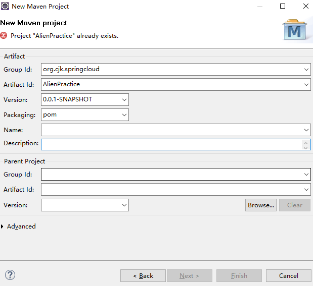
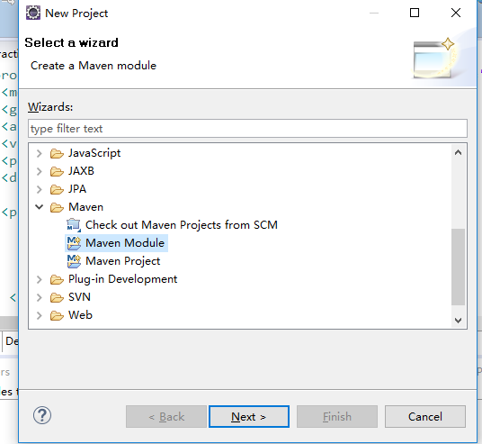
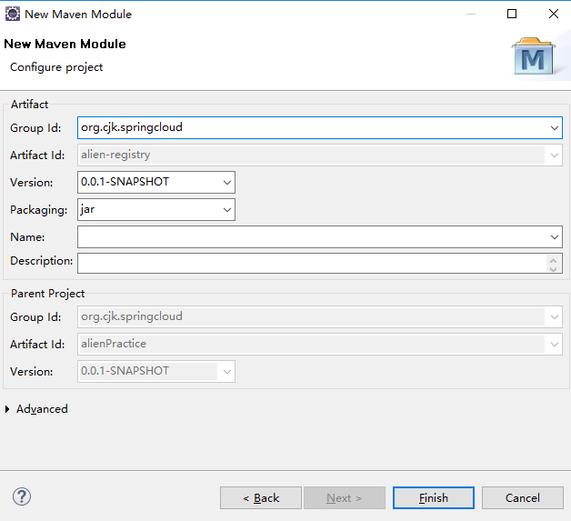
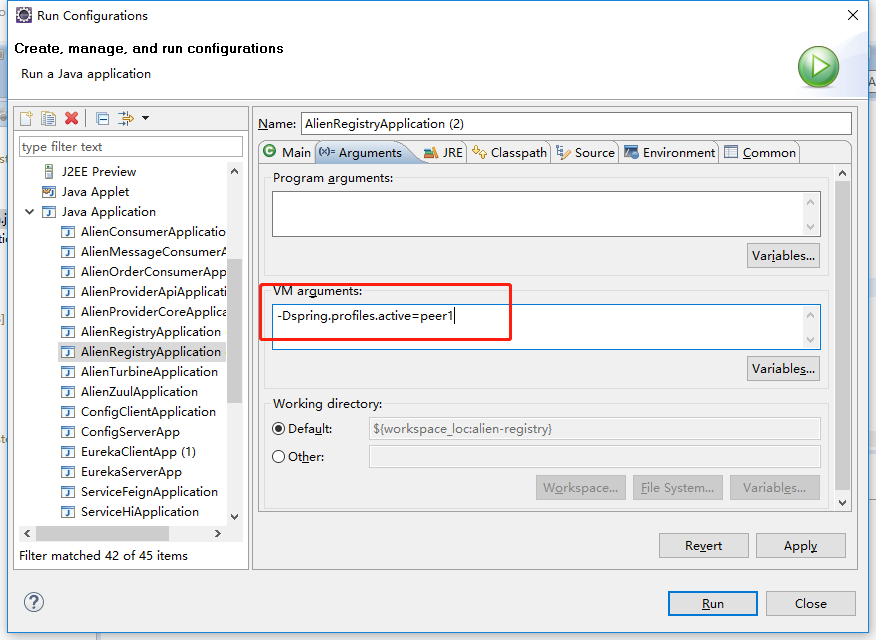

我个人由于之前学SpringCloud全家桶，发现网上的教程都是单个组件的教程，并没有组件整合起来的一个项目实战，所以我想自己先写一个简单版的项目实战，串起来各个组件，这样我们可以对SpringCloud的各个组件的特征有更加深刻的认知，所以写下这篇<<最简单的SpringCloud实战系列>>，再写完此系列后，也准备写一篇关于各个组件的源码解析系列。http://blogcjk.sharewe.club/2019/07/15/SpringCloudIntegrationProjectStudy-One-Idea
新建父工程: alienPractice Eclipse:

ps: 提示项目已存在忽略就好， 因为我是创建完项目重新弄截的图，所以有这个提示
修改pom文件：
1 2 3 4 5 6 7 8 9 10 11 12 13 14 15 16 17 18 19 20 21 22 23 24 25 26 27 28 29 30 31 32 33 34 35 36 37 38 39 40 41 42 43 44 45 46 47 48 49 50 51 <project xmlns="http://maven.apache.org/POM/4.0.0" xmlns:xsi="http://www.w3.org/2001/XMLSchema-instance" xsi:schemaLocation="http://maven.apache.org/POM/4.0.0 http://maven.apache.org/xsd/maven-4.0.0.xsd" > <modelVersion>4.0.0</modelVersion> <groupId>org.cjk.springcloud</groupId> <artifactId>alienPractice</artifactId> <version>0.0.1-SNAPSHOT</version> <packaging>pom</packaging> <description>SpringCloudPractice</description> <parent> <groupId>org.springframework.boot</groupId> <artifactId>spring-boot-starter-parent</artifactId> <version>2.0.3.RELEASE</version> <relativePath/> </parent> <properties> <project.build.sourceEncoding>UTF-8</project.build.sourceEncoding> <project.reporting.outputEncoding>UTF-8</project.reporting.outputEncoding> <java.version>1.8</java.version> <spring-cloud.version>Finchley.RELEASE</spring-cloud.version> </properties> <dependencies> <dependency> <groupId>org.springframework.boot</groupId> <artifactId>spring-boot-starter-test</artifactId> <scope>test</scope> </dependency> </dependencies> <dependencyManagement> <dependencies> <dependency> <groupId>org.springframework.cloud</groupId> <artifactId>spring-cloud-dependencies</artifactId> <version>${spring-cloud.version}</version> <type>pom</type> <scope>import</scope> </dependency> </dependencies> </dependencyManagement> <build> <plugins> <plugin> <groupId>org.springframework.boot</groupId> <artifactId>spring-boot-maven-plugin</artifactId> </plugin> </plugins> </build> </project>
新建注册中心模块 新建一个Maven Module，为alien-practice的子工程 ，作为注册中心


修改pom文件
1 2 3 4 5 6 7 8 9 10 11 12 13 14 15 16 <project xmlns="http://maven.apache.org/POM/4.0.0" xmlns:xsi="http://www.w3.org/2001/XMLSchema-instance" xsi:schemaLocation="http://maven.apache.org/POM/4.0.0 http://maven.apache.org/xsd/maven-4.0.0.xsd" > <modelVersion>4.0.0</modelVersion> <parent> <groupId>org.cjk.springcloud</groupId> <artifactId>alienPractice</artifactId> <version>0.0.1-SNAPSHOT</version> </parent> <artifactId>alien-registry</artifactId> <dependencies> <dependency> <groupId>org.springframework.cloud</groupId> <artifactId>spring-cloud-starter-netflix-eureka-server</artifactId> </dependency> </dependencies> </project>
在新建一个类，AlienRegistryApplication 作为SpringCloud -Eureka的启动类。
启动一个服务的注册中心， 只需要在启动类上添加 @EnableEurekaServer 注解即可。完整代码如下
1 2 3 4 5 6 7 8 9 10 11 12 13 14 15 16 17 18 19 package org.cjk.springcloud;import org.springframework.boot.SpringApplication;import org.springframework.boot.autoconfigure.SpringBootApplication;import org.springframework.cloud.netflix.eureka.server.EnableEurekaServer;@SpringBootApplication @EnableEurekaServer public class AlienRegistryApplication public static void main (String[] args) SpringApplication.run(AlienRegistryApplication.class , args ) ; } }
要想配置一个高可用的注册中心， 最重要的是其配置文件application.yml 的配置，可以已配置多个application.yml，之后启动多个实例时指定spring.profiles.active来指定要加载的配置文件，从而使各个EurekaServer通过serviceurl来互相关联， 使其具有高可用性。
在 src/main/resources 目录下新建两个文件 application-peer1.yml 和 application-peer2.yml
配置如下 peer1:
1 2 3 4 5 6 7 8 9 10 11 12 13 14 15 16 17 18 19 20 21 22 23 24 25 server: port: 11400 spring: profiles: peer1 eureka: instance: hostname: peer1 client: serviceUrl: defaultZone: http://peer2:11401/eureka/ fetchRegistry: false registerWithEureka: false server: enableSelfPreservation: true renewalPercentThreshold: 0.49 peer-node-read-timeout-ms: 1000
peer2:
1 2 3 4 5 6 7 8 9 10 11 12 13 14 15 16 17 18 server: port: 11401 spring: profiles: peer2 eureka: instance: hostname: peer2 client: serviceUrl: defaultZone: http://peer1:11400/eureka/ fetchRegistry: false registerWithEureka: false server: enable-self-preservation: true renewalPercentThreshold: 0.49 peer-node-read-timeout-ms: 1000
我们这里使用renewalPercentThreshold 来降低自我保护机制的阈值，省的总飘红，当然也可以直接再开关配置为false
配置hosts文件 Windows系统: C:\Windows\System32\drivers\etc\hosts
Linux系统 /etc/hosts
添加peer节点
1 2 127.0.0.1 peer1 127.0.0.1 peer2
启动项目 项目启动需添加参数
-Dspring.profiles.active=peer1

之后再启动一个peer2 -Dspring.profiles.active=peer2
查看注册中心 打开网页 http://peer1:11400/ 查看注册中心
过一会可能会提示 EMERGENCY! EUREKA MAY BE INCORRECTLY CLAIMING INSTANCES ARE UP WHEN THEY’RE NOT. RENEWALS ARE LESSER THAN THRESHOLD AND HENCE THE INSTANCES ARE NOT BEING EXPIRED JUST TO BE SAFE. 这是由于开启了自我保护，如果不想的话可以将 enable-self-preservation设为false，或者等后续章节的服务注册进Eureka,就不会提示了。